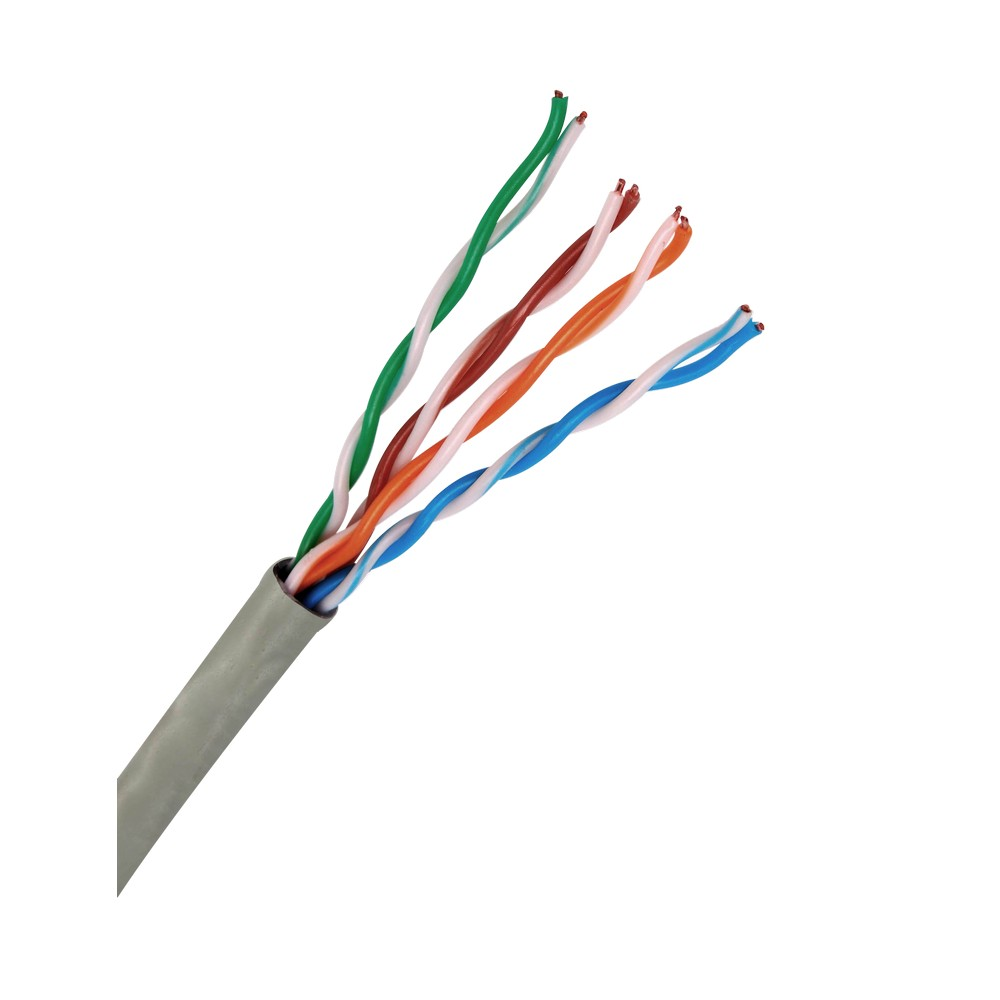

Componentes y Herramientas de Redes
1. ¿Qué son los componentes pasivos en la Red?
Los componentes pasivos son aquellos que no requieren energía eléctrica para su funcionamiento. Su función principal es facilitar la interconexión física de los dispositivos en la red, proporcionando los medios para que la señal de datos se transmita.
2. Descripción técnica de cada componente pasivo
- RJ45
 Es un conector físico comúnmente utilizado para cables Ethernet en redes locales (LAN). Tiene ocho pines y se utiliza para conectar dispositivos de red a través de cables UTP.
Es un conector físico comúnmente utilizado para cables Ethernet en redes locales (LAN). Tiene ocho pines y se utiliza para conectar dispositivos de red a través de cables UTP.
- Jacks o Keystone Son módulos de conexión que se instalan en placas de pared para facilitar la conexión de cables de red. Los keystones RJ45 son los más comunes y permiten la conexión de cables Ethernet.
- Cable UTP  (Unshielded Twisted Pair) es un tipo de cable utilizado en redes de datos. Consiste en pares de hilos trenzados sin apantallamiento. Es muy utilizado en redes LAN debido a su capacidad para transmitir datos a altas velocidades.
- Patch Panel Es un dispositivo que centraliza y organiza los cables de red en una instalación. Los cables se conectan al patch panel en un extremo y a los dispositivos de red en el otro. Facilita la gestión y el mantenimiento de la red.
- Patch cord Es un cable de conexión corto que se utiliza para conectar dispositivos de red a un patch panel o switch. Los patch cords suelen estar terminados en ambos extremos con conectores RJ45.
- Fibra óptica
 Es un medio de transmisión que utiliza hilos de vidrio o plástico para transmitir datos en forma de luz. Es inmune a interferencias electromagnéticas y permite la transmisión de datos a largas distancias y a altas velocidades.
Es un medio de transmisión que utiliza hilos de vidrio o plástico para transmitir datos en forma de luz. Es inmune a interferencias electromagnéticas y permite la transmisión de datos a largas distancias y a altas velocidades.
- Canaletas Son estructuras utilizadas para organizar y proteger los cables en una instalación de red. Ayudan a mantener el orden y facilitan el mantenimiento de los cables, evitando que se dañen o enreden.
3. ¿Qué son los componentes activos en la Red?
Los componentes activos son dispositivos que requieren energía eléctrica para funcionar. Estos dispositivos son responsables de la amplificación, procesamiento y dirección de las señales de datos en una red.
4. Descripción técnica de cada componente activo
- Switch Es un dispositivo de red que conecta múltiples dispositivos en una red local (LAN) y dirige los datos entre ellos. Los switches operan en la capa de enlace de datos y pueden gestionar el tráfico para mejorar el rendimiento de la red.
- Router
 Es un dispositivo que dirige el tráfico de datos entre diferentes redes. Se utiliza para conectar una red local a internet o para enlazar varias redes locales. Los routers operan en la capa de red y determinan la mejor ruta para el envío de datos.
Es un dispositivo que dirige el tráfico de datos entre diferentes redes. Se utiliza para conectar una red local a internet o para enlazar varias redes locales. Los routers operan en la capa de red y determinan la mejor ruta para el envío de datos.
- Tarjeta de red
 Es un componente que permite a un dispositivo conectarse a una red. Las tarjetas de red pueden ser inalámbricas o cableadas y se instalan en computadoras o servidores para proporcionar conectividad de red.
Es un componente que permite a un dispositivo conectarse a una red. Las tarjetas de red pueden ser inalámbricas o cableadas y se instalan en computadoras o servidores para proporcionar conectividad de red.
- Interruptor inteligente Wifi Es un dispositivo que permite controlar la energía de los aparatos eléctricos conectados a él a través de una red Wi-Fi. Estos interruptores pueden ser controlados remotamente mediante una aplicación o asistentes virtuales.
- Access Point Es un dispositivo que permite a los dispositivos inalámbricos conectarse a una red cableada. Los Access Points extienden la cobertura de una red Wi-Fi, permitiendo a más dispositivos conectarse en un área más amplia.
5. Herramientas utilizadas para realizar cableado estructurado
- Ponchadora
 Es una herramienta utilizada para conectar los cables UTP a los conectores RJ45 o jacks keystone. Realiza el engarzado del cable con el conector, asegurando una conexión firme y estable.
Es una herramienta utilizada para conectar los cables UTP a los conectores RJ45 o jacks keystone. Realiza el engarzado del cable con el conector, asegurando una conexión firme y estable.
- Crimpadora
 Similar a la ponchadora, la crimpadora se utiliza para conectar los cables a los conectores, generalmente para cables coaxiales o terminaciones de cables de par trenzado.
Similar a la ponchadora, la crimpadora se utiliza para conectar los cables a los conectores, generalmente para cables coaxiales o terminaciones de cables de par trenzado.
- Desforradora
 Es una herramienta que se utiliza para retirar el aislamiento de los cables sin dañar los conductores internos. Es esencial para preparar los cables antes de conectarlos.
Es una herramienta que se utiliza para retirar el aislamiento de los cables sin dañar los conductores internos. Es esencial para preparar los cables antes de conectarlos.
- Tester/Probador de cables
 Es un dispositivo que verifica la continuidad y el correcto conexionado de los cables de red. Asegura que los cables están correctamente conectados y operativos, evitando fallos en la red.
Es un dispositivo que verifica la continuidad y el correcto conexionado de los cables de red. Asegura que los cables están correctamente conectados y operativos, evitando fallos en la red.
6. ¿Qué es el cableado horizontal?
El cableado horizontal se refiere a los cables que conectan los paneles de interconexión de los racks a las estaciones de trabajo dentro de una misma planta o edificio. Es la infraestructura básica que proporciona conectividad en una red LAN. 
7. ¿Qué es el cableado vertical o backbone?
El cableado vertical, también conocido como backbone, conecta diferentes áreas o plantas de un edificio. Es la infraestructura principal que soporta la red, proporcionando interconexión entre diferentes segmentos de la red.
8. Tipos de cables para el sistema de cableado horizontal
Existen diferentes tipos de cables utilizados en el cableado horizontal, como los cables UTP (par trenzado no blindado), STP (par trenzado blindado), y cables de fibra óptica, cada uno con sus propias características y usos según la velocidad y distancia requeridas. 
Cable FTP
9. Normativa para hacer cables de red (Clase A y B)
Las normas TIA/EIA-568 definen dos estándares para la configuración de cables de red: Clase A y Clase B. Estos estándares especifican el orden de los colores de los cables dentro de los conectores RJ45 para garantizar la interoperabilidad y el rendimiento óptimo de la red.
10. Uso de un cable directo en la red
Un cable directo se utiliza para conectar dispositivos diferentes, como un ordenador a un switch o un router. Es el tipo de cable más común en redes Ethernet.
11. Uso de un cable cruzado en la red
Un cable cruzado se utiliza para conectar dispositivos similares, como conectar directamente dos ordenadores o dos switches sin necesidad de un switch intermedio. Intercambia el orden de los pines de transmisión y recepción.